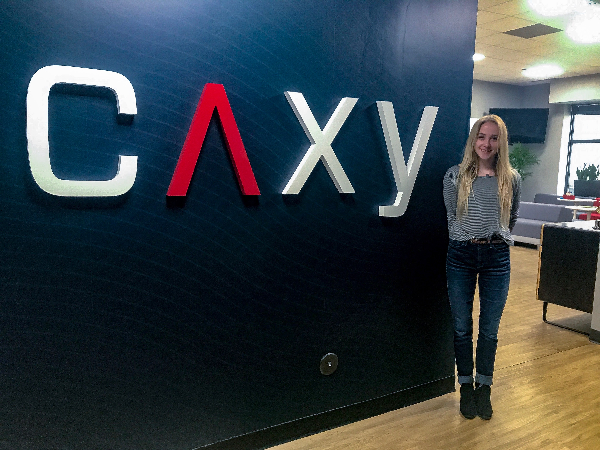

Caxy Interactive, LLC Summer Internship
Caxy's WebsiteDuring the summer of 2017 I interned for a UX focused web development company in Chicago. I worked as a team member on three very different website redesign projects. The clients ranged from a small non-profit website, to a large medical accredidation body's website, to a futures broker's site. I actively participated in daily stand up & client meetings for the three projects, while acting as a user researcher, UX designer, and front-end developer.
User Research
I conducted a total of 12 user interviews to gain an understanding of how users currently use a client's site to explore how to better serve their needs in the new site. This was especially important for this project because we, the researchers, were not experts in the client's field, but needed to have an indepth understanding of their daily goals and tasks essential for their work.
UX Design
For all three projects I performed heuristic evaluations, site inventories, site audits, and evaluated user behavior with website analytic tools to create an extensive UX recommendation documents that were given to clients. This document's purpose was to evalute the client's current website and how it meets or fails to meet UX best practices, and our recommendations for how to improve in the new site.
Front-end Development
I was given the task of writing HTML/CSS code for an email newsletter. This challenged me as I learned about the difference in programming for emails versus websites, and gave me experience with understanding different browser requirements. I also worked with the client directly by tweaking parts of the newsletter as they asked.
User Interface Design
I worked alongside a UI designer on the projects and learned principles of good UI design and shadowed her to understand how she created mood boards and initial designs for clients.
Project Management
I was an active team member contributing and sometimes leading daily stand up meetings with clients and remote team members. I was partially responsible for keeping the project on schedule with the sprint goals, and learned about the overall process of redesigning a website.
Agile Development
This internship exposed me to Agile for the second time, but in a very immersive way. Caxy closely follows Agile processes closely and uses Jira to organize project sprints, stories, and tasks. I actively participated in sprint planning and retrospectives, as well as daily stand up meetings and am an advocate of Agile development processes.
- 